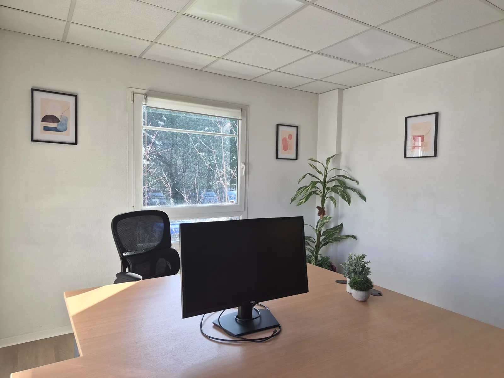
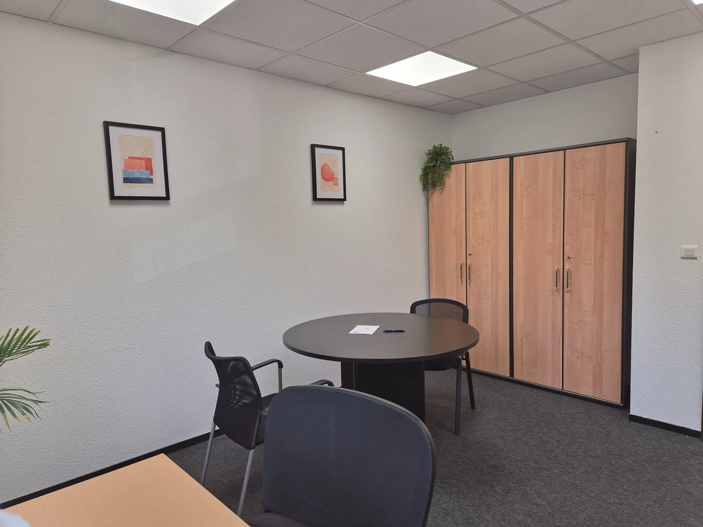

Mis à jour le 20 novembre 2026 · Rédigé par l'équipe Telexal, centre d'affaires à Mundolsheim depuis 1984
En bref
Au nord de Strasbourg, le principal pôle de bureaux, l'Espace Européen de l'Entreprise à Schiltigheim, est décrit comme saturé et en manque de bureaux neufs (Arthur Loyd, 2025). Les surfaces proposées y sont surtout des plateaux de plusieurs centaines de m², loués en bail commercial 3/6/9 autour de 120 à 175 € HT hors charges par m² et par an, avec dépôt de garantie et honoraires d'agence. Pour une équipe d'une à quelques personnes, un bureau équipé en centre d'affaires est souvent plus adapté : chez Telexal à Mundolsheim, 30 bureaux de 7 à 22 m² à partir de 375 € par mois, charges comprises, engagement dès 1 mois et 0 € de frais d'entrée.
Visiter les bureaux disponiblesLe marché des bureaux au nord de Strasbourg en 2025-2026
Quelques repères publiés récemment permettent de situer le marché :
- Dans l'Eurométropole de Strasbourg, l'offre de bureaux immédiatement disponible atteint 158 795 m², pour un taux de vacance brut de 5 % (bilan 2025 relayé par Le Journal des Entreprises).
- À l'échelle du Bas-Rhin, la demande placée s'établit à 54 644 m² en 2025, un niveau proche de 2024 mais inférieur de 23 % à la moyenne décennale.
- Selon Arthur Loyd (septembre 2025), l'Espace Européen de l'Entreprise est « aujourd'hui saturé », avec un déficit de bureaux neufs, et le marché souffre d'un écart persistant entre de grandes surfaces peu flexibles et une demande tournée vers des espaces plus petits.
- Au Wacken, le nouveau quartier d'affaires Archipel continue de se construire : Arthur Loyd signale un programme de 4 199 m² dont la livraison est prévue au deuxième trimestre 2028.
En pratique, une petite entreprise qui cherche 15 à 40 m² au nord de Strasbourg trouve peu d'offres adaptées en bail classique : les surfaces disponibles sont souvent trop grandes, ou anciennes.
Les pôles de bureaux du nord de Strasbourg
L'Espace Européen de l'Entreprise, Schiltigheim
Présenté comme le premier parc tertiaire de l'agglomération, sur environ 120 hectares autour d'un lac, il est desservi par l'A4 (sortie 50) et par le bus à haut niveau de service G vers la gare de Strasbourg. On y loue surtout des plateaux en bail 3/6/9.
Le Wacken et le quartier Archipel, Strasbourg
À côté du Parc des expositions et des institutions européennes, c'est le quartier d'affaires en construction de Strasbourg, avec des immeubles neufs livrés jusqu'en 2028.
Mundolsheim et la Zone commerciale Nord
Mundolsheim compte plusieurs zones d'activités : les Maréchaux, les Floralies, le Parc des découvertes et la Zone commerciale Nord. Telexal y est installé depuis 1984, dans une petite zone tertiaire à deux minutes de l'A4 et de l'A35, avec 40 places de parking privées.
Reichstett, Vendenheim et Bischheim
L'Écoparc rhénan, la zone d'activités de Vendenheim et celle de Bischheim sont plutôt tournées vers les locaux d'activité, l'industrie, l'automobile et le commerce que vers les petits bureaux.
Ce que coûte un bail commercial : un exemple chiffré
Prenons une surface de 100 m² à 150 € HT hors charges par m² et par an, un niveau courant dans les annonces de l'Espace Européen de l'Entreprise, avec les conditions qu'elles affichent le plus souvent : honoraires d'agence de 15 % HT du loyer annuel à la charge du preneur et dépôt de garantie de trois mois de loyer.
| Poste | Bail commercial, 100 m² | Bureau équipé Telexal |
|---|---|---|
| Loyer | 15 000 € HT par an, soit 1 250 € HT par mois, hors charges | À partir de 375 € par mois, selon le bureau |
| À la signature | 2 250 € HT d'honoraires + 3 750 € de dépôt de garantie | 0 € de frais d'entrée |
| Charges et taxe foncière | En plus (taxe foncière de l'ordre de 18 à 20 € HT/m²/an dans les annonces) | Électricité, chauffage, climatisation, ménage des parties communes inclus |
| Mobilier, internet | À acheter et à installer | Mobilier et fibre inclus |
| Engagement | 3/6/9 : sortie possible à chaque période triennale, avec 6 mois de préavis | Dès 1 mois |
| Services | Aucun | Accueil, courrier, salles de réunion, domiciliation incluse |
Ces deux colonnes ne décrivent pas le même produit : 100 m² conviennent à une équipe nombreuse, nos bureaux de 7 à 22 m² à une ou quelques personnes. L'exemple montre surtout le coût d'entrée et le niveau d'engagement d'un bail classique, qui pèsent lourd pour une petite structure.
Quelle solution selon la taille de votre équipe ?
- Seul, avec peu de rendez-vous : une domiciliation à partir de 29 € par mois et une salle de réunion à l'heure suffisent souvent.
- Seul ou à deux, au bureau tous les jours : un bureau équipé de 7 à 12 m².
- Une petite équipe : un bureau de 15 à 22 m², ou plusieurs bureaux voisins dans le centre.
- Une équipe nombreuse, installée pour plusieurs années : un plateau en bail commercial devient pertinent, et nos salles peuvent compléter pendant la recherche.
Temps de trajet jusqu'au centre
| Depuis | En voiture | Sans voiture |
|---|---|---|
| Gare de Strasbourg | ≈ 15 min | TER jusqu'à Mundolsheim (moins de 10 min), puis 8 min à pied |
| Schiltigheim, Espace Européen de l'Entreprise | 10 à 15 min | Bus CTS 60 |
| Wacken | ≈ 15 min | Bus CTS 60 |
| Hoenheim, Bischheim | moins de 10 min | Bus et vélo |
| Vendenheim | 5 à 8 min | TER, 1 station |
| Brumath | ≈ 15 min par l'A4 | TER avec correspondance, ≈ 35 min |
| Kehl | ≈ 20 min | - |
| Karlsruhe | ≈ 45 min | - |
Temps indicatifs, hors heures de pointe.
Calculer votre itinéraire dans Google Maps · 2 rue Thomas Edison, 67450 Mundolsheim
Visiter un bureau : huit points à vérifier
- La lumière naturelle et l'orientation du bureau.
- Le bruit : couloir, voisins, axe routier.
- Le débit internet réel, et ce qui se passe en cas de panne.
- L'accès en dehors des horaires d'accueil (chez Telexal, 24h/24 et 7j/7).
- Le stationnement pour vous, votre équipe et vos visiteurs.
- La disponibilité d'une salle de réunion et son prix.
- Ce qui est inclus, et ce qui sera facturé en plus.
- Les conditions de sortie : préavis, état des lieux, restitution du dépôt.


Ce qu'en disent nos clients
Telexal est noté 4,9/5 sur Google (54 avis en novembre 2026). Quelques avis publiés par nos clients :
★★★★★« Super bureaux pour bosser en toute sérénité ! »
Pierre-Geoffroy Pasturel, Fondateur Liquidy · avis Google
★★★★★« Bien situé et bien agencé, un espace de travail accueillant. Bravo à toute l'équipe ! »
Rémy Hubscher, Local Guide, juillet 2025 · avis Google
Questions fréquentes
En bail commercial, les annonces de l'Espace Européen de l'Entreprise affichent le plus souvent de 120 à 175 € HT hors charges par m² et par an, pour des surfaces de plusieurs centaines de m². En centre d'affaires, chez Telexal à Mundolsheim, un bureau équipé de 7 à 22 m² démarre à 375 € par mois, charges, fibre, mobilier et parking compris.
Oui chez Telexal : l'engagement démarre à 1 mois, puis vous restez aussi longtemps que vous le souhaitez. Un bail commercial classique engage pour des périodes de trois ans.
Non, 0 € de frais d'entrée chez Telexal. En bail commercial, les annonces prévoient généralement des honoraires d'agence (souvent 15 % HT du loyer annuel) et un dépôt de garantie de deux à trois mois de loyer.
Oui. Le centre dispose de 40 places privées et gratuites pour les locataires et leurs visiteurs.
Oui, les locataires disposent d'un accès sécurisé 24h/24 et 7j/7, en dehors des horaires d'accueil.
Oui. La location d'un bureau inclut la domiciliation de votre entreprise au 2 rue Thomas Edison, 67450 Mundolsheim, sans surcoût.
Voir les bureaux libres en ce moment
La visite est gratuite, sans engagement, et dure environ 30 minutes : bureaux disponibles, salles de réunion, accueil et parking.
Planifier une visite 03 88 18 37 37 Demander un devisSources
- Arthur Loyd, Solutions d'entreprise Alsace, septembre 2025
- Le Journal des Entreprises, immobilier d'entreprise : le Bas-Rhin entre attentisme et recomposition (bilan 2025)
- Annonce Bureauxlocaux, 302 m² à l'Espace Européen de l'Entreprise (150 € HT HC/m²/an)
- Annonce Geolocaux, immeuble Mikado à l'Espace Européen de l'Entreprise (173,91 € HT HC/m²/an)
- Annonce Bureauxlocaux, Crystal Parc à l'Espace Européen de l'Entreprise (120 € HT HC/m²/an)
- Eurométropole de Strasbourg, présentation de Mundolsheim
- CTS, réseau de bus et tram de l'Eurométropole